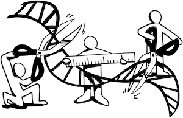
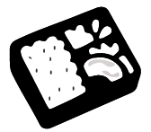
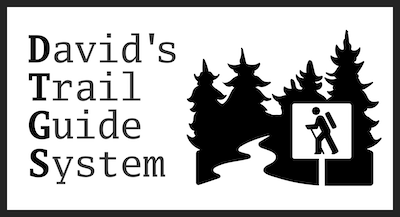

David Lougheed
Software & Projects
-
SNIPe
SNIPe is a web tool for optimally choosing environmental DNA (eDNA) primer pairs to identify a set of taxa. Part of a publication by Tournayre et al. (2024).
-
STRkit
STRkit is a short tandem repeat (STR) genotyper for long read sequencing data such as PacBio HiFi. STRkit was created as part of my Master's degree in Human Genetics at McGill.
-
EpiVar Browser
A browser for exploring quantitative trait loci and their associations with genotype and ancestry. Published as a Bioinformatics application note: Lougheed et al. (2024), and as part of a publication by Aracena et al. (2024).
-
Bento
A platform for storing, analyzing, and visualizing genomic and epigenomic data, created while working at the Canadian Centre for Computational Genomics (C3G).
-
David's Trail Guide System
A set of three components for creating mobile trail guide applications: a content server with a corresponding front-end and a white-label Expo application. I used this to build the latest version of the Elbow Lake Trail Guide.
-
MHCut Browser (2019)
A browser for microhomologies at variant CRISPR/Cas9 cut sites. Part of a publication by Grajcarek et al. (2019).
-
Elbow Lake Trail Guide
An interactive trail guide app available on Android and iOS.
-
Canadian Field Stations (2014-2016; 2024)
A compendium of field stations across Canada which I assist in maintaining.